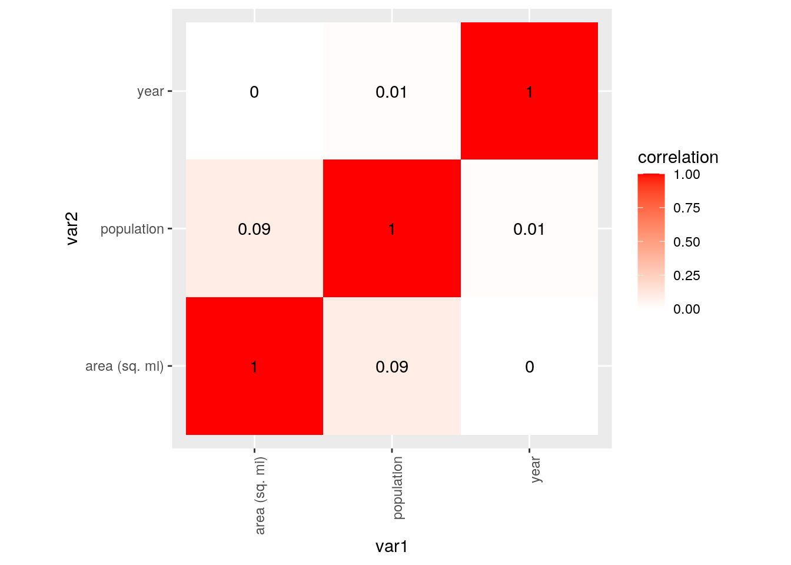
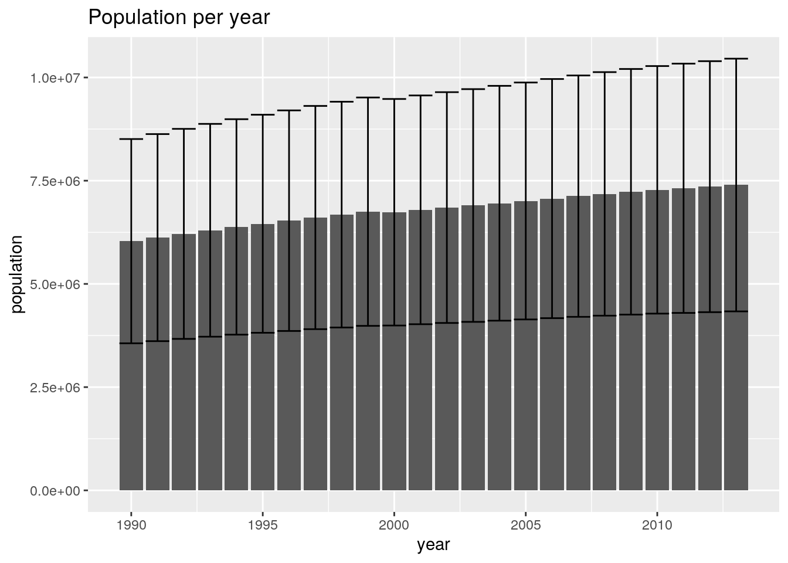
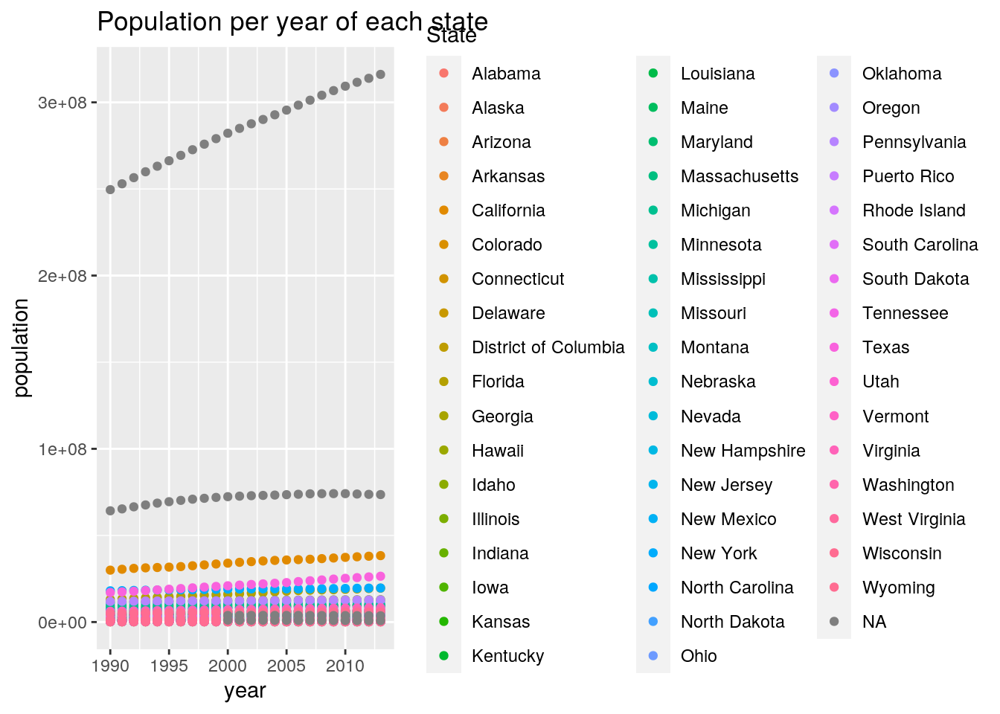
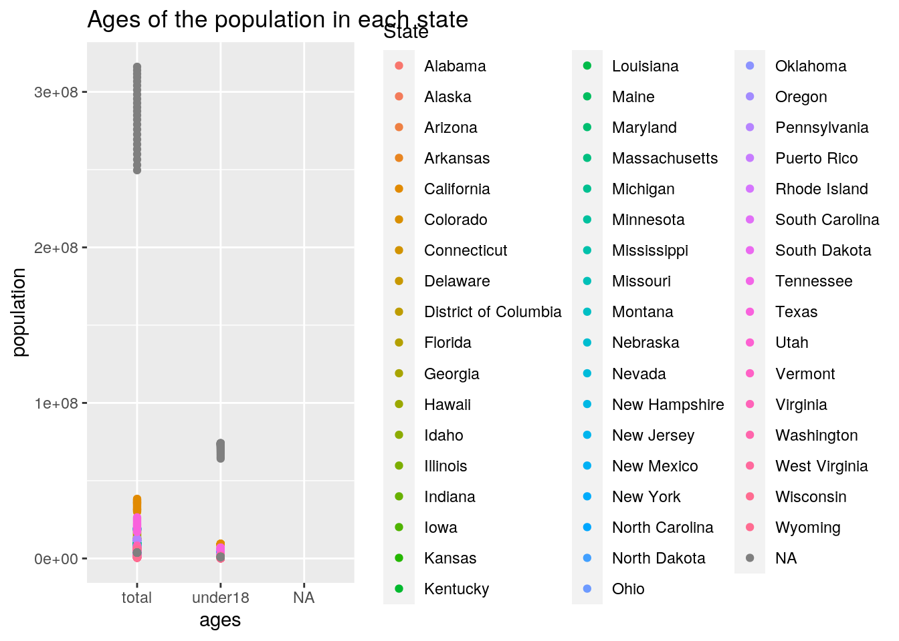
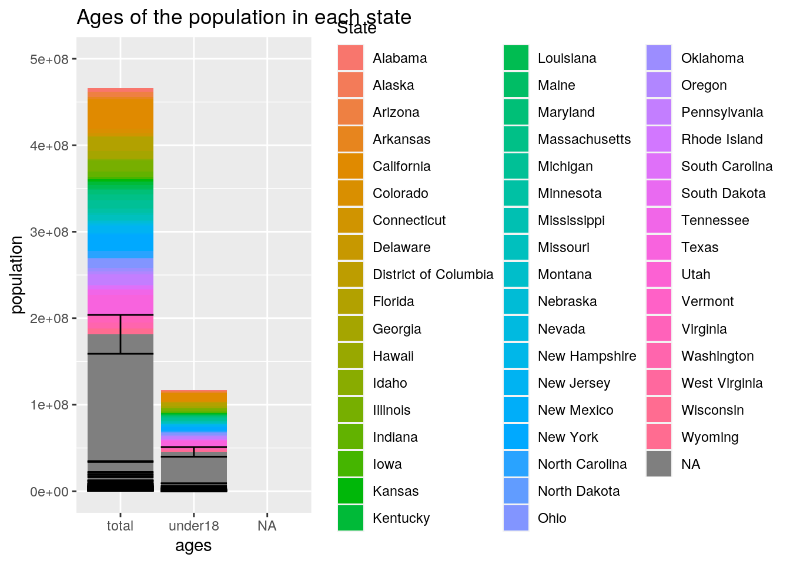
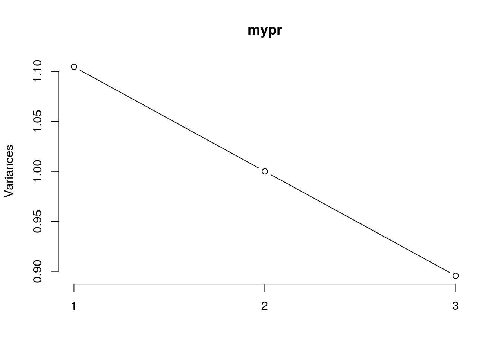
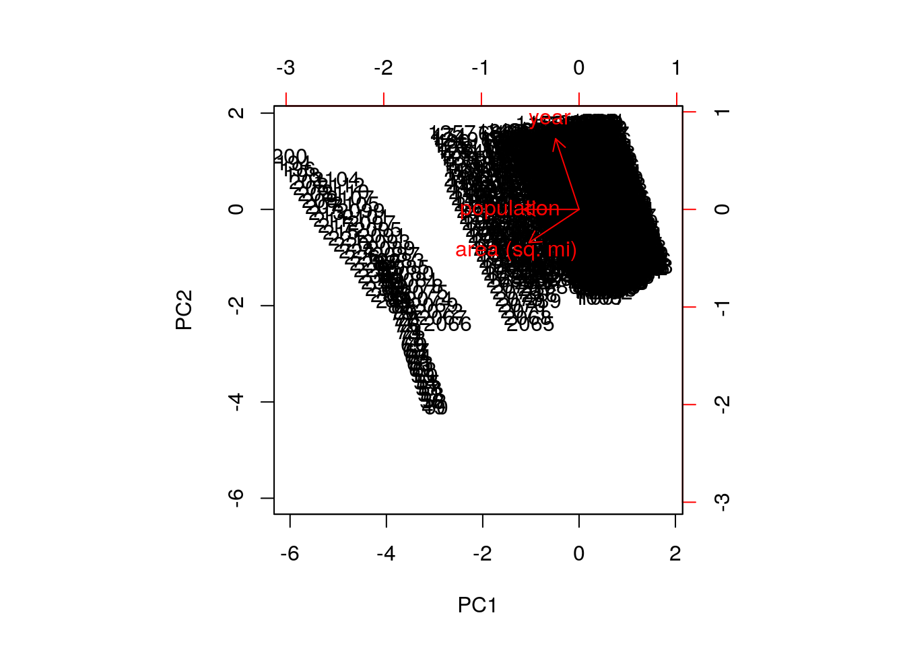
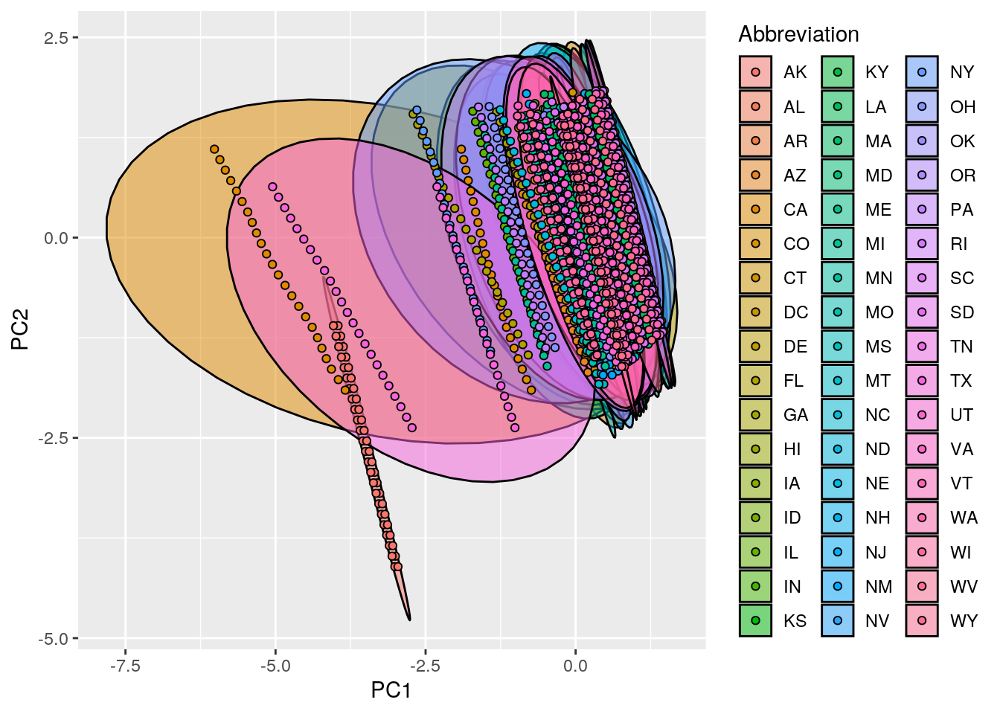

What data did I use?
# Data
library(tidyverse)
library(readr)
state_population <- read_csv("https://raw.githubusercontent.com/jakevdp/data-USstates/master/state-population.csv")
key <- read_csv("https://raw.githubusercontent.com/jasonong/List-of-US-States/master/states.csv")
good <- full_join(key, state_population, by = c(Abbreviation = "state/region"))
state_areas <- read_csv("https://raw.githubusercontent.com/jakevdp/data-USstates/master/state-areas.csv")# Joining Datasets
MERGED <- full_join(good, state_areas, by = c(State = "state"))
# To join my two datasets, I used the dplyr join function
# 'full join'. I chose to use full join because I didn't want
# any rows dropped and for all of the original data to be
# retained.# Introduction
## I was looking for two datasets that had a common variable
## of states. I was searching the internet and #I found one
## dataset titled state_population, which contains
## state/region, ages, and within that column there is ages
## under 18 and total, years, and lastly population numbers.
## Then, I wanted to find another dataset that also had the
## states variable and I found the dataset titled state_areas.
## This dataset has states in the first column and area in
## square miles in the second column. I thought this would be
## interesting to see if theres any associations between the
## area of a state and the number of people in that state that
## are under 18 or older. I definitely think the higher the
## area of a state, the higher the population in that state
## will be.# Tidying
tidy <- good %>% pivot_wider(names_from = "ages", values_from = "population")
tidy %>% pivot_longer(c("under18", "total"), names_to = "ages",
values_to = "population")## # A tibble: 2,544 x 5
## State Abbreviation year ages population
## <chr> <chr> <dbl> <chr> <dbl>
## 1 Alabama AL 2012 under18 1117489
## 2 Alabama AL 2012 total 4817528
## 3 Alabama AL 2010 under18 1130966
## 4 Alabama AL 2010 total 4785570
## 5 Alabama AL 2011 under18 1125763
## 6 Alabama AL 2011 total 4801627
## 7 Alabama AL 2009 under18 1134192
## 8 Alabama AL 2009 total 4757938
## 9 Alabama AL 2013 under18 1111481
## 10 Alabama AL 2013 total 4833722
## # … with 2,534 more rowstidy2 <- state_areas %>% pivot_wider(names_from = "state", values_from = "area (sq. mi)")
tidy2 %>% pivot_longer(everything(), names_to = "state")## # A tibble: 52 x 2
## state value
## <chr> <dbl>
## 1 Alabama 52423
## 2 Alaska 656425
## 3 Arizona 114006
## 4 Arkansas 53182
## 5 California 163707
## 6 Colorado 104100
## 7 Connecticut 5544
## 8 Delaware 1954
## 9 Florida 65758
## 10 Georgia 59441
## # … with 42 more rows# On each dataset, I first used pivot wider to make them
# untidy. Then, I used pivot longer to tidy them again, where
# each observation has its own row and every variable has its
# own column.# Wrangling
# Population variable
mutate(MERGED, new = population/year)## # A tibble: 2,545 x 7
## State Abbreviation ages year population `area (sq. mi)` new
## <chr> <chr> <chr> <dbl> <dbl> <dbl> <dbl>
## 1 Alabama AL under18 2012 1117489 52423 555.
## 2 Alabama AL total 2012 4817528 52423 2394.
## 3 Alabama AL under18 2010 1130966 52423 563.
## 4 Alabama AL total 2010 4785570 52423 2381.
## 5 Alabama AL under18 2011 1125763 52423 560.
## 6 Alabama AL total 2011 4801627 52423 2388.
## 7 Alabama AL total 2009 4757938 52423 2368.
## 8 Alabama AL under18 2009 1134192 52423 565.
## 9 Alabama AL under18 2013 1111481 52423 552.
## 10 Alabama AL total 2013 4833722 52423 2401.
## # … with 2,535 more rowsMERGED %>% mutate(meanp = mean(population, na.rm = T))## # A tibble: 2,545 x 7
## State Abbreviation ages year population `area (sq. mi)` meanp
## <chr> <chr> <chr> <dbl> <dbl> <dbl> <dbl>
## 1 Alabama AL under18 2012 1117489 52423 6805558.
## 2 Alabama AL total 2012 4817528 52423 6805558.
## 3 Alabama AL under18 2010 1130966 52423 6805558.
## 4 Alabama AL total 2010 4785570 52423 6805558.
## 5 Alabama AL under18 2011 1125763 52423 6805558.
## 6 Alabama AL total 2011 4801627 52423 6805558.
## 7 Alabama AL total 2009 4757938 52423 6805558.
## 8 Alabama AL under18 2009 1134192 52423 6805558.
## 9 Alabama AL under18 2013 1111481 52423 6805558.
## 10 Alabama AL total 2013 4833722 52423 6805558.
## # … with 2,535 more rowsMERGED %>% summarise(meanpopulaton = mean(population, na.rm = T))## # A tibble: 1 x 1
## meanpopulaton
## <dbl>
## 1 6805558.MERGED %>% filter(population < mean(population, na.rm = T))## # A tibble: 2,168 x 6
## State Abbreviation ages year population `area (sq. mi)`
## <chr> <chr> <chr> <dbl> <dbl> <dbl>
## 1 Alabama AL under18 2012 1117489 52423
## 2 Alabama AL total 2012 4817528 52423
## 3 Alabama AL under18 2010 1130966 52423
## 4 Alabama AL total 2010 4785570 52423
## 5 Alabama AL under18 2011 1125763 52423
## 6 Alabama AL total 2011 4801627 52423
## 7 Alabama AL total 2009 4757938 52423
## 8 Alabama AL under18 2009 1134192 52423
## 9 Alabama AL under18 2013 1111481 52423
## 10 Alabama AL total 2013 4833722 52423
## # … with 2,158 more rowsMERGED %>% filter(population > mean(population, na.rm = T))## # A tibble: 356 x 6
## State Abbreviation ages year population `area (sq. mi)`
## <chr> <chr> <chr> <dbl> <dbl> <dbl>
## 1 California CA under18 2012 9209007 163707
## 2 California CA total 2012 37999878 163707
## 3 California CA under18 2011 9252336 163707
## 4 California CA total 2011 37668681 163707
## 5 California CA under18 2010 9284094 163707
## 6 California CA total 2010 37333601 163707
## 7 California CA under18 2013 9174877 163707
## 8 California CA total 2013 38332521 163707
## 9 California CA total 2009 36961229 163707
## 10 California CA under18 2009 9294501 163707
## # … with 346 more rowsMERGED %>% filter(population < mean(population, na.rm = T)) %>%
select(State)## # A tibble: 2,168 x 1
## State
## <chr>
## 1 Alabama
## 2 Alabama
## 3 Alabama
## 4 Alabama
## 5 Alabama
## 6 Alabama
## 7 Alabama
## 8 Alabama
## 9 Alabama
## 10 Alabama
## # … with 2,158 more rowsMERGED %>% filter(population > mean(population, na.rm = T)) %>%
select(State)## # A tibble: 356 x 1
## State
## <chr>
## 1 California
## 2 California
## 3 California
## 4 California
## 5 California
## 6 California
## 7 California
## 8 California
## 9 California
## 10 California
## # … with 346 more rowsMERGED %>% summarise(sdpop = sd(population, na.rm = T))## # A tibble: 1 x 1
## sdpop
## <dbl>
## 1 28550145.MERGED %>% filter(population < sd(population, na.rm = T))## # A tibble: 2,452 x 6
## State Abbreviation ages year population `area (sq. mi)`
## <chr> <chr> <chr> <dbl> <dbl> <dbl>
## 1 Alabama AL under18 2012 1117489 52423
## 2 Alabama AL total 2012 4817528 52423
## 3 Alabama AL under18 2010 1130966 52423
## 4 Alabama AL total 2010 4785570 52423
## 5 Alabama AL under18 2011 1125763 52423
## 6 Alabama AL total 2011 4801627 52423
## 7 Alabama AL total 2009 4757938 52423
## 8 Alabama AL under18 2009 1134192 52423
## 9 Alabama AL under18 2013 1111481 52423
## 10 Alabama AL total 2013 4833722 52423
## # … with 2,442 more rowsMERGED %>% filter(population > sd(population, na.rm = T))## # A tibble: 72 x 6
## State Abbreviation ages year population `area (sq. mi)`
## <chr> <chr> <chr> <dbl> <dbl> <dbl>
## 1 California CA total 2012 37999878 163707
## 2 California CA total 2011 37668681 163707
## 3 California CA total 2010 37333601 163707
## 4 California CA total 2013 38332521 163707
## 5 California CA total 2009 36961229 163707
## 6 California CA total 2007 36250311 163707
## 7 California CA total 2008 36604337 163707
## 8 California CA total 2005 35827943 163707
## 9 California CA total 2006 36021202 163707
## 10 California CA total 2003 35253159 163707
## # … with 62 more rowsMERGED %>% filter(population < sd(population, na.rm = T)) %>%
select(State)## # A tibble: 2,452 x 1
## State
## <chr>
## 1 Alabama
## 2 Alabama
## 3 Alabama
## 4 Alabama
## 5 Alabama
## 6 Alabama
## 7 Alabama
## 8 Alabama
## 9 Alabama
## 10 Alabama
## # … with 2,442 more rowsMERGED %>% filter(population > sd(population, na.rm = T)) %>%
select(State)## # A tibble: 72 x 1
## State
## <chr>
## 1 California
## 2 California
## 3 California
## 4 California
## 5 California
## 6 California
## 7 California
## 8 California
## 9 California
## 10 California
## # … with 62 more rowsMERGED %>% summarise(minpop = min(population, na.rm = T))## # A tibble: 1 x 1
## minpop
## <dbl>
## 1 101309MERGED %>% filter(population < min(population, na.rm = T))## # A tibble: 0 x 6
## # … with 6 variables: State <chr>, Abbreviation <chr>, ages <chr>, year <dbl>,
## # population <dbl>, `area (sq. mi)` <dbl>MERGED %>% filter(population > min(population, na.rm = T))## # A tibble: 2,523 x 6
## State Abbreviation ages year population `area (sq. mi)`
## <chr> <chr> <chr> <dbl> <dbl> <dbl>
## 1 Alabama AL under18 2012 1117489 52423
## 2 Alabama AL total 2012 4817528 52423
## 3 Alabama AL under18 2010 1130966 52423
## 4 Alabama AL total 2010 4785570 52423
## 5 Alabama AL under18 2011 1125763 52423
## 6 Alabama AL total 2011 4801627 52423
## 7 Alabama AL total 2009 4757938 52423
## 8 Alabama AL under18 2009 1134192 52423
## 9 Alabama AL under18 2013 1111481 52423
## 10 Alabama AL total 2013 4833722 52423
## # … with 2,513 more rowsMERGED %>% filter(population < min(population, na.rm = T)) %>%
select(State)## # A tibble: 0 x 1
## # … with 1 variable: State <chr>MERGED %>% filter(population > min(population, na.rm = T)) %>%
select(State)## # A tibble: 2,523 x 1
## State
## <chr>
## 1 Alabama
## 2 Alabama
## 3 Alabama
## 4 Alabama
## 5 Alabama
## 6 Alabama
## 7 Alabama
## 8 Alabama
## 9 Alabama
## 10 Alabama
## # … with 2,513 more rowsMERGED %>% summarise(maxpop = max(population, na.rm = T))## # A tibble: 1 x 1
## maxpop
## <dbl>
## 1 316128839MERGED %>% filter(population < max(population, na.rm = T))## # A tibble: 2,523 x 6
## State Abbreviation ages year population `area (sq. mi)`
## <chr> <chr> <chr> <dbl> <dbl> <dbl>
## 1 Alabama AL under18 2012 1117489 52423
## 2 Alabama AL total 2012 4817528 52423
## 3 Alabama AL under18 2010 1130966 52423
## 4 Alabama AL total 2010 4785570 52423
## 5 Alabama AL under18 2011 1125763 52423
## 6 Alabama AL total 2011 4801627 52423
## 7 Alabama AL total 2009 4757938 52423
## 8 Alabama AL under18 2009 1134192 52423
## 9 Alabama AL under18 2013 1111481 52423
## 10 Alabama AL total 2013 4833722 52423
## # … with 2,513 more rowsMERGED %>% filter(population > max(population, na.rm = T))## # A tibble: 0 x 6
## # … with 6 variables: State <chr>, Abbreviation <chr>, ages <chr>, year <dbl>,
## # population <dbl>, `area (sq. mi)` <dbl>MERGED %>% filter(population < max(population, na.rm = T)) %>%
select(State)## # A tibble: 2,523 x 1
## State
## <chr>
## 1 Alabama
## 2 Alabama
## 3 Alabama
## 4 Alabama
## 5 Alabama
## 6 Alabama
## 7 Alabama
## 8 Alabama
## 9 Alabama
## 10 Alabama
## # … with 2,513 more rowsMERGED %>% filter(population > max(population, na.rm = T)) %>%
select(State)## # A tibble: 0 x 1
## # … with 1 variable: State <chr>MERGED %>% summarise(distpop = n_distinct(population, na.rm = T))## # A tibble: 1 x 1
## distpop
## <int>
## 1 2524HI <- MERGED %>% group_by(State) %>% summarise(meanpopulation = mean(population,
na.rm = TRUE), sdpop = sd(population, na.rm = TRUE), minpop = min(population,
na.rm = T), maxpop = max(population, na.rm = T)) %>% view()
MERGED %>% arrange(population) %>% head()## # A tibble: 6 x 6
## State Abbreviation ages year population `area (sq. mi)`
## <chr> <chr> <chr> <dbl> <dbl> <dbl>
## 1 District of Columbia DC under18 2010 101309 68
## 2 District of Columbia DC under18 2009 102098 68
## 3 District of Columbia DC under18 2008 102257 68
## 4 District of Columbia DC under18 2011 103906 68
## 5 District of Columbia DC under18 2007 104126 68
## 6 District of Columbia DC under18 2006 105651 68MERGED %>% arrange("area (sq. mi)") %>% head()## # A tibble: 6 x 6
## State Abbreviation ages year population `area (sq. mi)`
## <chr> <chr> <chr> <dbl> <dbl> <dbl>
## 1 Alabama AL under18 2012 1117489 52423
## 2 Alabama AL total 2012 4817528 52423
## 3 Alabama AL under18 2010 1130966 52423
## 4 Alabama AL total 2010 4785570 52423
## 5 Alabama AL under18 2011 1125763 52423
## 6 Alabama AL total 2011 4801627 52423MERGED %>% arrange(year) %>% head()## # A tibble: 6 x 6
## State Abbreviation ages year population `area (sq. mi)`
## <chr> <chr> <chr> <dbl> <dbl> <dbl>
## 1 Alabama AL under18 1990 1050041 52423
## 2 Alabama AL total 1990 4050055 52423
## 3 Alaska AK total 1990 553290 656425
## 4 Alaska AK under18 1990 177502 656425
## 5 Arizona AZ under18 1990 1006040 114006
## 6 Arizona AZ total 1990 3684097 114006# Area (sq. mi)
MERGED %>% group_by(State) %>% summarise(mean = mean("area (sq. mi)"),
n = n())## # A tibble: 53 x 3
## State mean n
## <chr> <dbl> <int>
## 1 Alabama NA 48
## 2 Alaska NA 48
## 3 Arizona NA 48
## 4 Arkansas NA 48
## 5 California NA 48
## 6 Colorado NA 48
## 7 Connecticut NA 48
## 8 Delaware NA 48
## 9 District of Columbia NA 48
## 10 Florida NA 48
## # … with 43 more rowsmean(MERGED$"area (sq. mi)", na.rm = T)## [1] 74223.74sd(MERGED$"area (sq. mi)", na.rm = T)## [1] 94921.03var(MERGED$"area (sq. mi)", na.rm = T)## [1] 9010001415n_distinct(MERGED$"area (sq. mi)", na.rm = T)## [1] 52min(MERGED$"area (sq. mi)", na.rm = T)## [1] 68max(MERGED$"area (sq. mi)", na.rm = T)## [1] 656425# Year
MERGED %>% summarise(meanyear = mean(year, na.rm = T))## # A tibble: 1 x 1
## meanyear
## <dbl>
## 1 2002.MERGED %>% summarise(sdyear = sd(year, na.rm = T))## # A tibble: 1 x 1
## sdyear
## <dbl>
## 1 6.92MERGED %>% summarise(minyear = min(year, na.rm = T))## # A tibble: 1 x 1
## minyear
## <dbl>
## 1 1990MERGED %>% summarise(maxyear = max(year, na.rm = T))## # A tibble: 1 x 1
## maxyear
## <dbl>
## 1 2013MERGED %>% summarise(varyear = var(year, na.rm = T))## # A tibble: 1 x 1
## varyear
## <dbl>
## 1 47.9mean(MERGED$year, na.rm = T)## [1] 2001.5sd(MERGED$year, na.rm = T)## [1] 6.923547var(MERGED$year, na.rm = T)## [1] 47.93551n_distinct(MERGED$year, na.rm = T)## [1] 24min(MERGED$year, na.rm = T)## [1] 1990max(MERGED$year, na.rm = T)## [1] 2013HI2 <- MERGED %>% group_by(State) %>% summarise(meanyear = mean(year,
na.rm = T), sdyear = sd(year, na.rm = T), minyear = min(year,
na.rm = T), maxyear = max(year, na.rm = T)) %>% view()
HI3 <- MERGED %>% group_by(State, ages) %>% summarise(meanyear = mean(year,
na.rm = T), sdyear = sd(year, na.rm = T), minyear = min(year,
na.rm = T), maxyear = max(year, na.rm = T)) %>% view()
library(purrr)
MERGED %>% split(MERGED$ages) %>% map(summary)## $total
## State Abbreviation ages year
## Length:1272 Length:1272 Length:1272 Min. :1990
## Class :character Class :character Class :character 1st Qu.:1996
## Mode :character Mode :character Mode :character Median :2002
## Mean :2002
## 3rd Qu.:2007
## Max. :2013
##
## population area (sq. mi)
## Min. : 453690 Min. : 68
## 1st Qu.: 1573433 1st Qu.: 35387
## Median : 3855132 Median : 56276
## Mean : 10881611 Mean : 74253
## 3rd Qu.: 6587580 3rd Qu.: 84904
## Max. :316128839 Max. :656425
## NA's :10 NA's :48
##
## $under18
## State Abbreviation ages year
## Length:1272 Length:1272 Length:1272 Min. :1990
## Class :character Class :character Class :character 1st Qu.:1996
## Mode :character Mode :character Mode :character Median :2002
## Mean :2002
## 3rd Qu.:2007
## Max. :2013
##
## population area (sq. mi)
## Min. : 101309 Min. : 68
## 1st Qu.: 390643 1st Qu.: 35387
## Median : 996839 Median : 56276
## Mean : 2729506 Mean : 74253
## 3rd Qu.: 1609652 3rd Qu.: 84904
## Max. :74134167 Max. :656425
## NA's :10 NA's :48# For each variable I attempted to use as many different ways
# as I could to find various summary statistics. I also tried
# to have at least 5 different summary statistics. For
# population, I found the mean, the standard deviation,
# minimum, maximum, and the number of distinct populations
# there were. I did this in multiple ways, using filter,
# summarise, group_by, arrange, etc. Then, I found the same
# summary statistics of the area, in square miles, variable.
# Lastly, I found the same for year but I again used several
# different methods. I used summarise alone and also with
# group_by.# Visualizing
cormat <- MERGED %>% select_if(is.numeric) %>% cor(use = "pair")
tidycor <- cormat %>% as.data.frame %>% rownames_to_column("var1") %>%
pivot_longer(-1, names_to = "var2", values_to = "correlation")
tidycor %>% ggplot(aes(var1, var2, fill = correlation)) + geom_tile() +
scale_fill_gradient2(low = "yellow", high = "red") + theme(axis.text.x = element_text(angle = 90,
hjust = 1)) + geom_text(aes(label = round(correlation, 2))) +
coord_fixed()
# This graph has different colors on it to show if there's
# any patterns in correlation values for multiple variables.
# The darker the red, the more of a correalation the two
# variables had. My graph, however, showed only strong
# correlations between the variable against itself. Of course
# a variable has a strong correlation with itself. No other
# variables, however had strong correlations with one
# another.ggplot(MERGED, aes(x = year, y = population)) + geom_bar(stat = "summary",
fun = mean) + geom_errorbar(stat = "summary", fun.data = mean_se) +
ggtitle("Population per year")
ggplot() + geom_point(data = MERGED, aes(x = year, y = population,
color = State)) + ggtitle("Population per year of each state")
# This graph showed that for each state, as the years
# increased, population numbers also increased for the most
# part. The higher population numbers on my graph were region
# values. The rest were all pretty close to one another.library(tidyverse)
ggplot() + geom_point(data = MERGED, aes(x = ages, y = population,
color = State)) + ggtitle("Ages of the population in each state")
ggplot(MERGED, aes(x = ages, y = population, fill = State)) +
geom_bar(stat = "summary", fun = mean) + geom_errorbar(stat = "summary",
fun.data = mean_se) + ggtitle("Ages of the population in each state") +
scale_y_continuous(limits = c(0, 5e+08))
# This graph showed for each state, ages which consisted of
# two categories, total and under 18, and population numbers.
# It showed that there was a greater number of people that
# were over the age of 18, than under 18.# Dimensionality Reduction
MERGED2 <- na.omit(MERGED)
mypr <- prcomp(MERGED2[4:6], scale = TRUE)
mypr## Standard deviations (1, .., p=3):
## [1] 1.0509421 1.0000000 0.9463195
##
## Rotation (n x k) = (3 x 3):
## PC1 PC2 PC3
## year -0.3002202 9.053926e-01 -0.3002202
## population -0.7071068 2.308190e-14 0.7071068
## area (sq. mi) -0.6402092 -4.245755e-01 -0.6402092summary(mypr)## Importance of components:
## PC1 PC2 PC3
## Standard deviation 1.0509 1.0000 0.9463
## Proportion of Variance 0.3682 0.3333 0.2985
## Cumulative Proportion 0.3682 0.7015 1.0000plot(mypr, type = "l")
biplot(mypr, scale = 0)
str(mypr)## List of 5
## $ sdev : num [1:3] 1.051 1 0.946
## $ rotation: num [1:3, 1:3] -3.00e-01 -7.07e-01 -6.40e-01 9.05e-01 2.31e-14 ...
## ..- attr(*, "dimnames")=List of 2
## .. ..$ : chr [1:3] "year" "population" "area (sq. mi)"
## .. ..$ : chr [1:3] "PC1" "PC2" "PC3"
## $ center : Named num [1:3] 2002 3494881 74253
## ..- attr(*, "names")= chr [1:3] "year" "population" "area (sq. mi)"
## $ scale : Named num [1:3] 6.92 5.01e+06 9.49e+04
## ..- attr(*, "names")= chr [1:3] "year" "population" "area (sq. mi)"
## $ x : num [1:2448, 1:3] 0.0274 -0.4947 0.1122 -0.4035 0.0696 ...
## ..- attr(*, "dimnames")=List of 2
## .. ..$ : NULL
## .. ..$ : chr [1:3] "PC1" "PC2" "PC3"
## - attr(*, "class")= chr "prcomp"mypr$x## PC1 PC2 PC3
## [1,] 0.0273739652 1.470708398 -6.435333e-01
## [2,] -0.4947070642 1.470708398 -1.214523e-01
## [3,] 0.1121960553 1.209170342 -5.549080e-01
## [4,] -0.4034740278 1.209170342 -3.923787e-02
## [5,] 0.0695683489 1.339939370 -5.990040e-01
## [6,] -0.4491015519 1.339939370 -8.033406e-02
## [7,] -0.3562132539 1.078401314 2.250713e-04
## [8,] 0.1551027193 1.078401314 -5.110909e-01
## [9,] -0.0151401545 1.601477426 -6.877429e-01
## [10,] -0.5403539193 1.601477426 -1.625291e-01
## [11,] -0.2574820841 0.816863258 7.494133e-02
## [12,] 0.2420939626 0.816863258 -4.246347e-01
## [13,] -0.3072451519 0.947632286 3.798068e-02
## [14,] 0.1983608672 0.947632286 -4.676253e-01
## [15,] -0.1562199768 0.555325201 1.471267e-01
## [16,] 0.3309436537 0.555325201 -3.400370e-01
## [17,] -0.2079316562 0.686094230 1.121146e-01
## [18,] 0.2862315961 0.686094230 -3.820486e-01
## [19,] -0.1073444374 0.424556173 1.849748e-01
## [20,] 0.3748088202 0.424556173 -2.971784e-01
## [21,] -0.0601392574 0.293787145 2.244934e-01
## [22,] 0.4182523754 0.293787145 -2.538983e-01
## [23,] 0.0316439337 0.032249089 3.061576e-01
## [24,] 0.5039423808 0.032249089 -1.661408e-01
## [25,] -0.0134753428 0.163018117 2.645532e-01
## [26,] 0.4611193899 0.163018117 -2.100416e-01
## [27,] 0.5905422086 -0.229288967 -7.929324e-02
## [28,] 0.1236579669 -0.229288967 3.875910e-01
## [29,] 0.0771873614 -0.098519939 3.473379e-01
## [30,] 0.5470412250 -0.098519939 -1.225160e-01
## [31,] 0.1706094464 -0.360057995 4.273632e-01
## [32,] 0.6343323090 -0.360057995 -3.635963e-02
## [33,] 0.6770393145 -0.490827023 7.657082e-03
## [ reached getOption("max.print") -- omitted 2415 rows ]MERGED <- na.omit(MERGED)
MERGED2 <- cbind(MERGED, mypr$x[, 1:2])
head(MERGED2)## State Abbreviation ages year population area (sq. mi) PC1
## 1 Alabama AL under18 2012 1117489 52423 0.02737397
## 2 Alabama AL total 2012 4817528 52423 -0.49470706
## 3 Alabama AL under18 2010 1130966 52423 0.11219606
## 4 Alabama AL total 2010 4785570 52423 -0.40347403
## 5 Alabama AL under18 2011 1125763 52423 0.06956835
## 6 Alabama AL total 2011 4801627 52423 -0.44910155
## PC2
## 1 1.470708
## 2 1.470708
## 3 1.209170
## 4 1.209170
## 5 1.339939
## 6 1.339939library(ggplot2)
ggplot(MERGED2, aes(PC1, PC2, col = Abbreviation, fill = Abbreviation)) +
stat_ellipse(geom = "polygon", col = "black", alpha = 0.5) +
geom_point(shape = 21, col = "black")
cor(MERGED[4:6], MERGED2[7:8])## PC1 PC2
## year -0.3155140 9.053926e-01
## population -0.7431283 2.266122e-14
## area (sq. mi) -0.6728228 -4.245755e-01# This showed that the correlation between population and PC3
# was the highest. Then, there were negative correlations
# between year and PC1, population and PC1, which actually
# had a high negative correlation, area and PC1, area and
# PC2, year and PC3, and area and PC3. When the correlation
# is high and positive it means that as the value for an
# observsation increases along the principal component, so
# does for example the population because it had a value of
# 0.7. With a negative correaltion, as one increases, the
# other decreases. If the value is small, that indicates
# there's no real correlation, as shown with the PC2.## paste this chunk into the ```{r setup} chunk at the top of
## your project 1 .Rmd file
knitr::opts_chunk$set(echo = TRUE, eval = TRUE, fig.align = "center",
warning = F, message = F, tidy = TRUE, tidy.opts = list(width.cutoff = 60),
R.options = list(max.print = 100))…